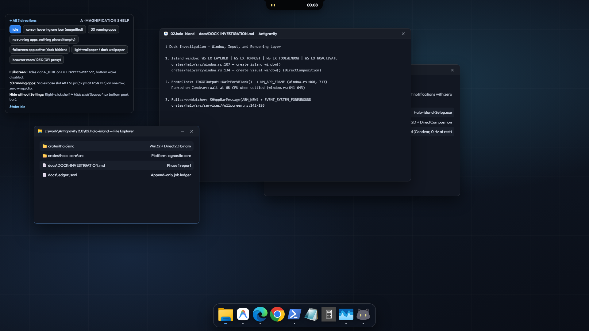

Direction AA — Magnification shelf
macOS-like floating bottom shelf with continuous cursor-follow magnification and running dots; trades away a second GPU swapchain redraw at full display Hz on every mouse move and competes with Windows 11's bottom taskbar edge.
Fullscreen: Hides via
SW_HIDE on FullscreenWatcher; bottom-edge wake disabled during fullscreen.30 running apps: Proportionally shrinks base icon slot from 48 px to 36 px (32 px at 125% DPI) on one single row without clipping or wrapping.
Hide without Settings: Right-click shelf → Hide shelf (tucks to a 4 px bottom peek handle; click handle to restore).